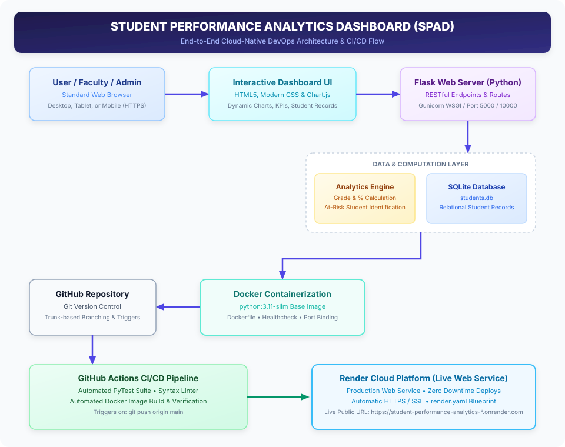

Student Performance Analytics Dashboard (SPAD) — Cloud-Native DevOps Architecture

HTML5, responsive CSS3, and dynamic Chart.js dashboards connecting to backend RESTful endpoints with asynchronous JSON fetch operations.
Python 3.11 Flask WSGI application with embedded SQLite database, analytical KPI computation engine, and automatic seeding.
Dockerized container environment (`python:3.11-slim`), automated GitHub Actions CI/CD pipeline, and continuous deployment on Render Web Services.